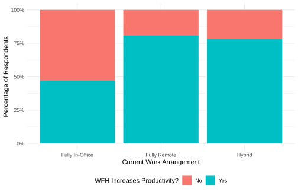
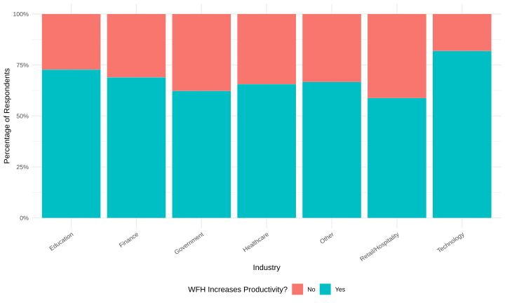

Psych 4010W Project: Remote Work and Self- Reported Productivity
Ethan Krakar
University of Missouri
Abstract
This is an analysis done on a previously discussed essay regarding remote and in-person work productivity. This research aims to answer whether remote work decreases self-perceived productivity.
Psych 4010W Project: Remote Work and Self- Reported Productivity
Introduction
In recent years, society has stood divided on remote work. Some claim that remote work causes work productivity to slip due to distractions, home activities, etc, while others, have claimed that they feel they are able to work more productively than in the office because they can deal with their home life and work life at the same time. This introduces a question, who is right?
In this paper, I attempt to see if remote work reduces productivity compared to in-person work. I will use an online data set from Kaggle to get my results. I hypothesize that remote work will reduce self-perceived productivity.
Methods
In order to conduct this experiment, I will use results from the Kaggle online data set to create comparisons between remote work respondents and office work respondents. I will specifically focus on the variable: Do you think that working from home increases your work productivity? Additionally, the data set has occupations, years in the workforce, and age group which can also be used to find results. I will use R Studio to do my analyses.
In my analysis, I intend to compare whether job occupation impacts remote work productivity, whether age impacts remote work productivity, and whether years in the workforce impact work productivity. By comparing these groups, we can find out if productivity is either reduced or increased based on several factors. With the results of these analyses, I will be able to answer my hypothesis, and make suggestions for future research.
Results
[WRITE A SHORT OVERVIEW OF YOUR RESULTS HERE.]
Work Arrangement
Figure 1
Perceived Productivity Benefit by Current Work Arrangement

Table 1
Perceived Productivity Benefit by Current Work Arrangement
| Work arrangement | N | Said Yes | % Yes |
|---|---|---|---|
| Fully In-Office | 300 | 141 | 47.0 |
| Fully Remote | 297 | 241 | 81.1 |
| Hybrid | 403 | 315 | 78.2 |
Table 2
Pairwise Comparisons Between Work Arrangements (Holm-Adjusted p-values)
| Group 1 | Group 2 | p (Holm) |
|---|---|---|
| Fully Remote | Fully In-Office | < .001 |
| Hybrid | Fully In-Office | < .001 |
| Hybrid | Fully Remote | 0.384 |
Industry
Figure 2
Perceived Productivity Benefit by Industry

Age and Years of Experience
[WRITE YOUR RESULTS FOR AGE AND YEARS OF EXPERIENCE HERE.]
Summary of Chi-Square Tests
Table 3
Chi-Square Tests of Perceived Productivity by Predictor
| Predictor | N | χ² | df | p | p (Holm) | Cramér’s V |
|---|---|---|---|---|---|---|
| Work arrangement | 1000 | 105.29 | 2 | < .001 | < .001 | 0.324 |
| Industry | 1000 | 27.31 | 6 | < .001 | < .001 | 0.165 |
| Years of experience | 1000 | 4.53 | 4 | 0.339 | 0.339 | 0.067 |
| Age group | 1000 | 6.92 | 4 | 0.140 | 0.280 | 0.083 |
[WRITE A SENTENCE OR TWO SUMMARIZING THE TESTS, citing Table 3. If any row shows NA for df, that test used a simulated p-value because some expected counts were below 5; say so.]
Logistic Regression
Table 4
Logistic Regression Predicting Perceived Productivity Increase (Odds Ratios)
| Term | OR | 95% CI Lower | 95% CI Upper | p |
|---|---|---|---|---|
| arrangement: Fully Remote | 5.41 | 3.68 | 7.96 | < .001 |
| arrangement: Hybrid | 4.32 | 3.07 | 6.06 | < .001 |
| experience: 3–5 years | 1.08 | 0.65 | 1.79 | 0.774 |
| experience: 6–10 years | 0.82 | 0.50 | 1.33 | 0.416 |
| experience: 11–20 years | 0.83 | 0.51 | 1.35 | 0.447 |
| experience: 20+ years | 0.60 | 0.35 | 1.06 | 0.079 |
| industry: Finance | 0.78 | 0.44 | 1.37 | 0.388 |
| industry: Government | 0.65 | 0.36 | 1.19 | 0.164 |
| industry: Healthcare | 0.61 | 0.35 | 1.06 | 0.080 |
| industry: Other | 0.83 | 0.47 | 1.44 | 0.500 |
| industry: Retail/Hospitality | 0.47 | 0.26 | 0.83 | 0.010 |
| industry: Technology | 1.81 | 1.05 | 3.12 | 0.033 |
| age: 25–34 | 1.16 | 0.73 | 1.86 | 0.534 |
| age: 35–44 | 0.83 | 0.52 | 1.33 | 0.446 |
| age: 45–54 | 0.87 | 0.52 | 1.46 | 0.597 |
| age: 55+ | 0.57 | 0.31 | 1.03 | 0.063 |
| gender: Male | 1.05 | 0.78 | 1.42 | 0.729 |
| gender: Non-binary/Other | 1.12 | 0.53 | 2.38 | 0.768 |
Exploratory Analyses
Table 5
Exploratory Trend Tests Across Ordered Age and Experience Groups
| Predictor | OR | p |
|---|---|---|
| Age group (per step up) | 0.89 | 0.050 |
| Years of experience (per step up) | 0.91 | 0.088 |
Table 6
Chi-Square Tests Among Fully Remote Respondents Only
| Predictor | N | χ² | df | p | Cramér’s V |
|---|---|---|---|---|---|
| Age group | 297 | 0.47 | NA | 0.979 | 0.040 |
| Years of experience | 297 | 9.16 | 4 | 0.057 | 0.176 |
```
Bibliography
https://www.kaggle.com/datasets/mohamedelzeini/the-impacts-of-working-remotely-and-in-an-office